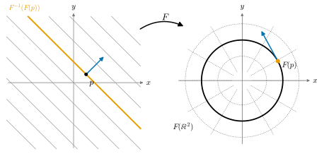

2.5 계수정리
이 절의 목표
- 계수가 \(r\)인 선형사상은 기저를 잘 고르면 행렬 \(\begin{pmatrix} I_r & 0 \\ 0 & 0 \end{pmatrix}\)이 됨을 보일 수 있다.
- 전미분의 계수가 근처에서 줄어들지 않는다는 사실과, 계수가 최대이면 근처에서 일정하다는 사실을 증명할 수 있다.
- 계수정리(계수가 일정한 사상의 국소 표준형)를 진술하고 역함수 정리로부터 증명할 수 있다.
- 전미분이 전사인 경우와 단사인 경우의 국소 표준형을 구체적인 사상에서 좌표로 구현할 수 있다.
선수 지식
동기
2.3절과 2.4절의 두 정리는 모두 “전미분의 계수가 꽉 찬” 경우였다. 역함수 정리는 \(DF(p)\)가 가역인 경우(계수 \(n = m\))이고, 음함수 정리는 \(DF(p)\)가 전사인 경우(계수 \(m \le n\))이다. 두 경우 모두 결론은 “\(F\)는 \(p\) 근처에서 선형사상처럼 생겼다”였다. 앞의 경우 \(F\)는 좌표를 바꾸면 항등사상이고, 뒤의 경우 등위집합이 평평한 그래프가 된다. 그렇다면 계수가 \(0\)과 최댓값 사이의 값 \(r\)이면 어떻게 되는가?
선형대수에서는 답이 간단하다. 계수가 \(r\)인 선형사상은 정의역과 공역의 기저를 잘 고르면 “처음 \(r\)개 성분은 그대로 두고 나머지는 \(0\)으로 보내는” 사상이 된다 (보조정리 2.5.1, 그 첫 예가 예 1.4.14). 계수정리는 이것의 비선형판이다. 다만 조건이 하나 더 붙는다. 전미분의 계수가 \(p\)에서만이 아니라 \(p\)의 근방 전체에서 일정해야 한다.

선형대수의 준비
앞으로 \(J_r\)은 왼쪽 위 \(r \times r\) 부분이 단위행렬 \(I_r\)이고 나머지 성분이 모두 \(0\)인 \(m \times n\) 행렬을 뜻한다. \(J_r\)이 나타내는 선형사상은 \((x^1, \dots, x^n) \mapsto (x^1, \dots, x^r, 0, \dots, 0)\)이다.
보조정리 2.5.1 (선형사상의 표준형). \(m \times n\) 행렬 \(A\)의 계수가 \(r\)이면 가역행렬 \(P\)(\(m \times m\))와 \(Q\)(\(n \times n\))가 있어서
이다.
증명 아이디어: 차원 정리의 증명에 나온 기저, 즉 “핵의 기저를 뒤에 붙인 정의역의 기저”와 “상의 기저를 확장한 공역의 기저”로 행렬을 쓴다.
증명. \(A\)를 선형사상 \(x \mapsto Ax\)로 본다. 정리 1.2.8의 증명처럼 \(\ker A\)의 기저 \((k_1, \dots, k_{n-r})\)을 \(\R^n\)의 기저 \(\mathcal{B} = (v_1, \dots, v_r, k_1, \dots, k_{n-r})\)로 확장하면 \((Av_1, \dots, Av_r)\)은 \(\im A\)의 기저다. 이것을 정리 1.1.18(b)로 \(\R^m\)의 기저 \(\mathcal{C} = (Av_1, \dots, Av_r, c_{r+1}, \dots, c_m)\)으로 확장한다. \(Av_j\)는 \(\mathcal{C}\)의 \(j\)번째 벡터이고 \(Ak_i = 0\)이므로, 이 두 기저에 대한 \(A\)의 행렬은 정의 1.2.13에 의해 \(J_r\)이다. 표준기저에서 \(\mathcal{B}\), \(\mathcal{C}\)로의 기저변환 행렬을 \(B\), \(C\)(각각 \(\mathcal{B}\), \(\mathcal{C}\)의 벡터를 열로 늘어놓은 가역행렬)라 하면 정리 1.4.12에서 \(C^{-1}AB = J_r\)이다. \(P = C^{-1}\), \(Q = B\)로 두면 된다.
또 하나 필요한 것은 “계수는 근처로 가면서 갑자기 줄어들 수 없다”는 사실이다. 늘어날 수는 있다. \(x \mapsto x^2\)의 전미분은 \(0\)에서 계수 \(0\)이지만 그 근처에서는 계수 \(1\)이다.
보조정리 2.5.2 (계수는 근처에서 줄어들지 않는다). \(F\colon U \to \R^m\)이 \(C^1\)급이고 \(\rank DF(p) = r\)이면, \(p\)를 포함하는 열린집합 \(U_1 \subseteq U\)가 있어서 모든 \(x \in U_1\)에서 \(\rank DF(x) \ge r\)이다. 특히 \(\rank DF(p) = \min(n, m)\)이면 \(p\) 근처에서 \(\rank DF(x) = \min(n, m)\)으로 일정하다.
증명 아이디어: \(r\)개의 일차독립인 열을 골라 그람 행렬식을 본다. 그람 행렬식은 성분의 다항식이라 연속이므로, \(p\)에서 \(0\)이 아니면 근처에서도 \(0\)이 아니다.
증명. \(DF(p)\)의 열들은 \(\im DF(p)\)를 생성하고 이 공간의 차원이 \(r\)이므로, 정리 1.1.18(a)에 의해 그 가운데 \(r\)개의 열 \(j_1 \lt \dots \lt j_r\)이 일차독립이다. \(x \in U\)에 대하여 \(DF(x)\)의 이 \(r\)개 열로 만든 \(m \times r\) 행렬을 \(M(x)\)라 하고, \(G(x) = M(x)^{\mathsf{T}}M(x)\)라 하자. \(G(x)\)의 \((i, l)\) 성분은 두 열의 내적이므로 \(G(x)\)는 그 열들의 그람 행렬이다. \(M(p)\)의 열은 일차독립이므로 자신이 생성하는 공간의 기저이고, 명제 1.5.13(b)에 의해 \(G(p)\)는 가역, 즉 \(\det G(p) \neq 0\)이다(정리 1.6.8(b)). \(\det G(x)\)는 편미분 \(\partial_j F^i(x)\)의 다항식이고 편미분은 연속이므로, \(x \mapsto \det G(x)\)는 연속이다. 따라서 \(p\)를 포함하는 열린집합 \(U_1\)에서 \(\det G(x) \neq 0\)이다. \(x \in U_1\)이고 \(M(x)a = 0\)이면 \(G(x)a = M(x)^{\mathsf{T}}M(x)a = 0\)이므로 \(a = 0\)이다. 즉 \(M(x)\)의 열은 일차독립이고 \(\rank DF(x) \ge r\)이다. 마지막 문장은 계수가 \(\min(n, m)\)을 넘을 수 없기 때문이다(따름정리 1.2.10의 증명에서 쓴 \(\rank T \le \dim V, \dim W\)).
계수정리
\(F\colon U \to \R^m\)이 매끄러울 때, 모든 \(x \in U\)에서 \(\rank DF(x) = r\)이면 \(F\)가 \(U\)에서 계수가 \(r\)로 일정하다고 말한다. 여기서 계수는 정의 1.2.9의 선형사상의 계수다.
정리 2.5.3 (계수정리, rank theorem). \(U \subseteq \R^n\)이 열린집합이고 \(F\colon U \to \R^m\)이 매끄러우며 \(U\)에서 계수가 \(r\)로 일정하다고 하자. 그러면 모든 \(p \in U\)에 대하여 \(p\)를 포함하는 열린집합 \(U_0 \subseteq U\), \(F(p)\)를 포함하는 열린집합 \(V_0 \subseteq \R^m\) (\(F(U_0) \subseteq V_0\)), 그리고 열린집합 위로 가는 미분동형사상 \(\varphi\colon U_0 \to \hat U_0 \subseteq \R^n\), \(\psi\colon V_0 \to \hat V_0 \subseteq \R^m\)이 있어서 \(\varphi(p) = 0\), \(\psi(F(p)) = 0\)이고
이다(\((x^1, \dots, x^n) \in \hat U_0\)).
이 정리가 말하는 것. 계수가 일정한 사상은, 정의역과 공역의 좌표를 (선형이 아닐 수도 있는 미분동형사상으로) 잘 바꾸면 선형사상 \(J_r\)과 똑같다. 따라서 \(p\) 근처에서 \(F\)는 \(n - r\)차원 방향으로는 상수이고(“누르는 방향”), 상은 \(r\)차원의 곧은 조각이다. \(\varphi\)와 \(\psi\)는 \(\R^n\)과 \(\R^m\)의 열린집합 사이의 미분동형사상이고, 뒤에서 다양체의 차트가 할 일을 여기서 미리 하고 있다.
증명 아이디어: 먼저 선형 좌표변환으로 \(DF(p) = J_r\)로 만든다. 정의역에서는 \(F\)의 처음 \(r\)개 성분 \(F'\)를 새 좌표로 삼는다(역함수 정리). 그러면 \(F\)는 \((z', z'') \mapsto (z', R(z', z''))\) 꼴이 되고, 계수가 \(r\)을 넘지 않으므로 \(R\)은 \(z''\)에 의존하지 않는다. 마지막으로 공역에서 그래프 \(y'' = R(y')\)를 평평하게 펴는 미분동형사상을 쓴다.
증명. \(r = 0\), \(r = n\), \(r = m\)인 경우에는 아래에서 해당하는 좌표 묶음이 비어 있다고 보면 같은 논증이 된다(\(\R^0 = \{0\}\)).
0단계(정규화). 보조정리 2.5.1로 \(P\,DF(p)\,Q = J_r\)인 가역행렬 \(P, Q\)를 잡고 아핀 미분동형사상 \(A_1(x) = p + Qx\), \(A_2(y) = P(y - F(p))\)를 두자 (예 2.3.2(a)). \(\tilde F = A_2 \circ F \circ A_1\)은 \(0\)을 포함하는 열린집합 \(A_1^{-1}(U)\)에서 매끄럽고, \(\tilde F(0) = 0\)이며 연쇄법칙에서 \(D\tilde F(x) = P\,DF(A_1(x))\,Q\)이다. 가역행렬을 곱해도 계수는 변하지 않으므로(\(Q\)는 전사라 \(\im(DF\,Q) = \im DF\)이고, \(P\)는 단사라 상의 차원을 보존한다) \(\tilde F\)도 계수가 \(r\)로 일정하고 \(D\tilde F(0) = J_r\)이다. \(\tilde F\)에 대해 \(\tilde\varphi, \tilde\psi\)를 찾으면 \(\varphi = \tilde\varphi \circ A_1^{-1}\), \(\psi = \tilde\psi \circ A_2\)가 \(F\)에 대해 (2.5.2)를 만족한다. \(\psi \circ F \circ \varphi^{-1} = \tilde\psi \circ A_2 \circ F \circ A_1 \circ \tilde\varphi^{-1} = \tilde\psi \circ \tilde F \circ \tilde\varphi^{-1}\)이기 때문이다. 따라서 처음부터 \(p = 0\), \(F(0) = 0\), \(DF(0) = J_r\)이라 가정한다.
1단계(정의역의 좌표). \(x = (x', x'') \in \R^r \times \R^{n-r}\), \(F = (F', F'') \in \R^r \times \R^{m-r}\)으로 나누어 쓴다. \(DF(0) = J_r\)은 \(D_{x'}F'(0) = I_r\), \(D_{x''}F'(0) = 0\), \(DF''(0) = 0\)이라는 뜻이다. \(\varphi(x) = (F'(x), x'')\)로 두면 \(\varphi\colon U \to \R^n\)은 매끄럽고
\[ D\varphi(0) = \begin{pmatrix} D_{x'}F'(0) & D_{x''}F'(0) \\ 0 & I_{n-r} \end{pmatrix} = I_n \]
이다. 역함수 정리에 의해 \(0\)을 포함하는 열린집합 \(U_1 \subseteq U\)와 \(\hat U_1\)이 있어서 \(\varphi|_{U_1}\colon U_1 \to \hat U_1\)이 미분동형사상이다. \(z = (z', z'') \in \hat U_1\)이고 \(x = \varphi^{-1}(z)\)이면 \(\varphi(x) = z\)의 처음 \(r\)개 성분에서 \(F'(x) = z'\)이다. 따라서 매끄러운 \(R = F'' \circ \varphi^{-1}\colon \hat U_1 \to \R^{m-r}\)에 대하여
이다.
2단계(\(R\)은 \(z''\)에 의존하지 않는다). (2.5.3)을 미분하면
\[ D(F \circ \varphi^{-1})(z) = \begin{pmatrix} I_r & 0 \\ D_{z'}R(z) & D_{z''}R(z) \end{pmatrix} \]
이다. 연쇄법칙에서 이 행렬은 \(DF(\varphi^{-1}(z))\)에 가역행렬 \(D\varphi^{-1}(z)\)를 곱한 것이므로 계수가 \(r\)이다. 처음 \(r\)개 열은 위쪽 부분이 \(I_r\)이므로 일차독립이다. 만약 어떤 \(j \gt r\)에 대해 \(j\)번째 열 \((0,\ \partial_{z^j}R(z))\)가 \(0\)이 아니라면, 이 열과 처음 \(r\)개 열은 일차독립이다(일차결합이 \(0\)이면 위쪽 부분에서 처음 \(r\)개의 계수가 \(0\)이고, 그러면 남은 열의 계수도 \(0\)이다). 그러면 계수가 \(r + 1\) 이상이 되어 모순이다. 따라서 \(\hat U_1\)의 모든 점에서 \(D_{z''}R = 0\)이다. 이제 \(\varepsilon \gt 0\)을 \(B_{2\varepsilon}(0) \subseteq \hat U_1\)이 되게 잡고 \(B' = B_\varepsilon(0) \subseteq \R^r\), \(B'' = B_\varepsilon(0) \subseteq \R^{n-r}\), \(\hat U_0 = B' \times B''\)로 두자 (정리 2.4.4의 증명과 같은 이유로 \(\hat U_0 \subseteq \hat U_1\)). \(z' \in B'\)을 고정하면 \(z'' \mapsto R(z', z'')\)은 공 \(B''\)에서 전미분이 \(0\)이므로 따름정리 2.2.10에 의해 상수다. 즉 매끄러운 \(S(z') = R(z', 0)\)에 대하여 \(\hat U_0\)에서 \(R(z', z'') = S(z')\)이다.
3단계(공역의 좌표). \(V_0 = B' \times \R^{m-r}\)이라 하고 \(\psi\colon V_0 \to V_0\), \(\psi(y', y'') = (y',\ y'' - S(y'))\)로 두자. \(\psi\)는 매끄럽고 역사상 \((y', w) \mapsto (y', w + S(y'))\)도 매끄러우므로 미분동형사상이다. \(U_0 = \varphi^{-1}(\hat U_0)\)이라 하면 \(U_0\)은 \(0\)을 포함하는 열린집합이고, \(z \in \hat U_0\)이면 \(F \circ \varphi^{-1}(z) = (z', S(z')) \in V_0\)이므로 \(F(U_0) \subseteq V_0\)이며
\[ \psi \circ F \circ \varphi^{-1}(z', z'') = \psi(z', S(z')) = (z',\ S(z') - S(z')) = (z', 0) \]
이다. 이것이 (2.5.2)다. 끝으로 \(\varphi(0) = (F'(0), 0) = 0\)이고 \(\psi(0) = (0, -S(0)) = (0, -F''(0)) = 0\)이다.
계수가 최대인 두 경우는 따로 적어 둘 만하다. 이 경우에는 보조정리 2.5.2에 의해 “계수가 일정하다”는 가정이 한 점에서의 조건으로 줄어든다. 또 좌표변환 하나를 다른 쪽에 흡수해, 정의역이나 공역 한쪽에서만 좌표를 바꾸면 되게 할 수 있다.
따름정리 2.5.4 (전미분이 전사인 경우와 단사인 경우). \(F\colon U \to \R^m\)이 매끄럽고 \(p \in U\)라 하자.
- (a) \(DF(p)\)가 전사이면(\(m \le n\)), \(p\)를 포함하는 열린집합 \(U_0\)과 미분동형사상 \(\varphi\colon U_0 \to \hat U_0\)이 있어서 \(\hat U_0\)에서 \(F \circ \varphi^{-1}(x^1, \dots, x^n) = (x^1, \dots, x^m)\)이다. 즉 좌표를 바꾸면 \(F\)는 사영이다.
- (b) \(DF(p)\)가 단사이면(\(n \le m\)), \(p\)를 포함하는 열린집합 \(U_0\), \(F(U_0)\)을 포함하는 열린집합 \(V_0\)과 미분동형사상 \(\psi\colon V_0 \to \hat V_0\)이 있어서 \(U_0\)에서 \(\psi \circ F(x^1, \dots, x^n) = (x^1, \dots, x^n, 0, \dots, 0)\)이다. 즉 좌표를 바꾸면 \(F\)는 포함사상이다.
증명. 두 경우 모두 \(\rank DF(p) = \min(n, m)\)이므로 보조정리 2.5.2에 의해 \(p\)를 포함하는 열린집합에서 계수가 일정하고, 거기서 정리 2.5.3의 \(\varphi, \psi\)를 얻는다.
(a) \(r = m\)이므로 \(\psi \circ F \circ \varphi^{-1} = \pi\), \(\pi(x^1, \dots, x^n) = (x^1, \dots, x^m)\)이다. \(F = \psi^{-1} \circ \pi \circ \varphi\)이고, \(\Psi(u, w) = (\psi^{-1}(u), w)\) (\(u \in \hat V_0\), \(w \in \R^{n-m}\))로 두면 \(\psi^{-1} \circ \pi = \pi \circ \Psi\)이다. \(\pi(\varphi(x)) = \psi(F(x)) \in \hat V_0\)이므로 \(\varphi(U_0) \subseteq \hat V_0 \times \R^{n-m}\)이고, \(\Psi\)는 \(\hat V_0 \times \R^{n-m}\)에서 \(V_0 \times \R^{n-m}\)으로 가는 미분동형사상이다. 따라서 \(\tilde\varphi = \Psi \circ \varphi\)는 \(U_0\)에서 그 상 위로 가는 미분동형사상이고 \(F = \pi \circ \tilde\varphi\), 즉 \(F \circ \tilde\varphi^{-1} = \pi\)이다.
(b) \(r = n\)이므로 \(\psi \circ F = \iota \circ \varphi\), \(\iota(x) = (x, 0)\)이다. \(V_0\)을 \(\psi^{-1}(\hat U_0 \times \R^{m-n})\)으로 줄여도 \(F(U_0)\)을 포함하고(\(\psi(F(x)) = (\varphi(x), 0)\)), \(\Theta(u, w) = (\varphi^{-1}(u), w)\)는 \(\hat U_0 \times \R^{m-n}\)에서 \(U_0 \times \R^{m-n}\)으로 가는 미분동형사상이다. \(\tilde\psi = \Theta \circ \psi\)로 두면 \(\tilde\psi \circ F(x) = \Theta(\varphi(x), 0) = (x, 0)\)이다.
(a)는 따름정리 2.4.8을 다시 본 것이다. 좌표 \(\tilde\varphi\)에서 등위집합 \(F^{-1}(c)\)는 좌표평면 \(\{x^1 = c^1, \dots, x^m = c^m\}\)의 조각이 된다.
예와 비예
예 2.5.5 (평면을 원에 감는 사상). \(F(x, y) = (\cos(x + y),\ \sin(x + y))\)라 하자. \(s = x + y\)로 쓰면
\[ DF(x, y) = \begin{pmatrix} -\sin s & -\sin s \\ \cos s & \cos s \end{pmatrix} \]
이다. 두 열이 같고 \(0\)이 아니므로(\(\sin^2 s + \cos^2 s = 1\)) 모든 점에서 계수가 \(1\)이다. 정리 2.5.3의 좌표를 직접 만들어 보자. 점 \(p\)를 고정하고 \(s_0 = p^1 + p^2\)라 하자.
- 정의역. \(\varphi(x, y) = (x + y,\ y)\)는 가역 선형사상이고 \(\varphi^{-1}(u, v) = (u - v,\ v)\)이다. 그러면 \(F \circ \varphi^{-1}(u, v) = (\cos u, \sin u) = P(1, u)\)이다. 새 좌표 \(u\)는 “어느 올에 있는가”, \(v\)는 “올 위의 어디에 있는가”를 나타낸다.
- 공역. 예 2.3.10(b)에 의해 극좌표 사상 \(P\)는 \(W = (0, \infty) \times (-\pi, \pi)\)에서 미분동형사상이다. 회전 \(R_{s_0}\)(예 1.2.2(e))에 대하여 \(P(\rho, \theta + s_0) = R_{s_0}P(\rho, \theta)\)이므로 \(P\)는 \(W_{s_0} = (0, \infty) \times (s_0 - \pi, s_0 + \pi)\)에서도 미분동형사상이다. 그 역사상을 \((\rho, \theta)\)로 쓰고 \(\psi = (\theta,\ \rho - 1)\)로 두면 \(\psi\)는 \(F(p)\)를 포함하는 열린집합 \(V_0 = P(W_{s_0})\)에서 정의된 미분동형사상이다.
- 표준형. \(U_0 = \varphi^{-1}\big((s_0 - \pi, s_0 + \pi) \times \R\big)\)에서 \(\psi \circ F \circ \varphi^{-1}(u, v) = \psi(P(1, u)) = (u, 0)\)이다.
이것이 그림 2.5.1의 내용이다. 올 \(\{x + y = c\}\)는 \(u = c\)라는 좌표선이고, 원은 \(\psi\)에서 \(\rho - 1 = 0\)이라는 좌표선이다. (원점을 중심으로 하려면 \(u\) 대신 \(u - s_0\), \(v\) 대신 \(v - p^2\)을 쓰면 된다.)
검증: verify/v-2-5-rank-theorem.py
예 2.5.6 (그래프 곡면: 단사인 경우). \(U \subseteq \R^2\)가 열린집합이고 \(f\colon U \to \R\)가 매끄러울 때 그래프 곡면의 기준 매개화 \(\mathbf{x}(u, v) = (u,\ v,\ f(u, v))\)를 보자. \(D\mathbf{x} = \begin{pmatrix} 1 & 0 \\ 0 & 1 \\ f_u & f_v \end{pmatrix}\)의 위쪽 \(2 \times 2\) 부분이 단위행렬이므로 두 열은 일차독립이고, 모든 점에서 \(D\mathbf{x}\)는 단사다(계수 \(2\)). 따름정리 2.5.4(b)의 \(\psi\)를 직접 쓸 수 있다. \(V_0 = U \times \R\)에서 \[ \psi(x, y, z) = \big(x,\ y,\ z - f(x, y)\big) \] 로 두면 \(\psi\)는 역사상 \((x, y, w) \mapsto (x, y, w + f(x, y))\)를 가지는 미분동형사상이고 \(\psi \circ \mathbf{x}(u, v) = (u, v, f(u, v) - f(u, v)) = (u, v, 0)\)이다. 즉 \(\psi\)는 곡면을 수직 방향으로 밀어서 평면 \(z = 0\)으로 편다. 이것은 정리 2.5.3의 증명 3단계에서 \(S = f\)인 경우와 같다. 곡면이 휘어 있다는 사실(예 2.2.18)은 미분동형사상으로는 보이지 않는다. 휘어짐을 재려면 길이와 각이라는 추가 구조가 필요하고, 그것이 7장과 8장의 주제다.
검증: verify/v-2-5-rank-theorem.py
비예 2.5.7 (계수가 일정하지 않은 사상). (a) \(F(x) = x^2\)(\(\R \to \R\))은 \(x \neq 0\)에서 계수 \(1\), \(x = 0\)에서 계수 \(0\)이다. \(0\) 근처에서 (2.5.2) 꼴로 쓸 수 없다. 미분동형사상은 전단사이므로, 표준형이 \(x \mapsto x\)(\(r = 1\))이면 \(F\)는 \(0\) 근처에서 단사여야 하는데 \(F(-t) = F(t)\)이다. 표준형이 \(x \mapsto 0\)(\(r = 0\))이면 \(F\)는 \(0\) 근처에서 상수여야 하는데 그렇지 않다.
(b) 극좌표 사상 \(P\)는 \(r \neq 0\)에서 계수 \(2\), \(r = 0\)에서 계수 \(1\)이다(예 2.3.10(d)). \((0, \theta)\) 근처에서 표준형이 계수 \(2\)이면 \(P\)가 그 근처에서 단사여야 하고, 계수 \(1\)이면 \(P\)의 상이 곡선 \(\psi^{-1}(\R \times \{0\})\)에 들어가야 한다. 그러나 \(P\)는 \(\{r = 0\}\)을 한 점으로 보내므로 단사가 아니고, \(r \gt 0\)인 점에서는 국소 미분동형사상이라 상이 열린집합을 포함하므로 곡선에 들어가지 않는다.
요약
- 계수가 \(r\)인 행렬 \(A\)는 가역행렬 \(P, Q\)로 \(PAQ = J_r\)이 된다(보조정리 2.5.1).
- 전미분의 계수는 근처에서 줄어들지 않는다. 그래서 계수가 최대인 조건은 근처에서 유지된다(보조정리 2.5.2).
- 계수정리: 계수가 \(r\)로 일정한 매끄러운 사상은 적당한 미분동형사상 \(\varphi, \psi\)로 \(\psi \circ F \circ \varphi^{-1} = J_r\)이 된다(정리 2.5.3).
- 전미분이 전사이면 좌표를 바꿔 사영으로, 단사이면 포함사상으로 만들 수 있다(따름정리 2.5.4). 계수가 일정하지 않으면 이런 표준형이 없다.
다음 절에서는 미분에서 적분으로 넘어간다. 미분동형사상으로 변수를 바꾸면 다중적분이 어떻게 바뀌는지, 그리고 그때 왜 \(\abs{\det DF}\)가 나타나는지를 다룬다.
연습문제
연습 2.5.1 ★ (a) 원환면의 기준 매개화 \(\mathbf{x}(u, v) = \big((R + r\cos u)\cos v,\ (R + r\cos u)\sin v,\ r\sin u\big)\) (\(0 \lt r \lt R\))의 전미분이 모든 점에서 계수 \(2\)임을 보여라. (6장(예 6.5.8: 원환면이 정칙곡면임), 7장(\(E, F, G\))에서 사용) (b) \(F(x, y) = (xy,\ x^2 + y^2)\)의 전미분의 계수를 각 점에서 구하여라.
힌트
(a)는 두 열의 그람 행렬식 \(\abs{\mathbf{x}_u}^2\abs{\mathbf{x}_v}^2 - \inner{\mathbf{x}_u}{\mathbf{x}_v}^2\)을 계산한다.
풀이
(a) \(\mathbf{x}_u = (-r\sin u\cos v,\ -r\sin u\sin v,\ r\cos u)\), \(\mathbf{x}_v = \big(-(R + r\cos u)\sin v,\ (R + r\cos u)\cos v,\ 0\big)\)이다. \(\abs{\mathbf{x}_u}^2 = r^2\), \(\abs{\mathbf{x}_v}^2 = (R + r\cos u)^2\), \(\inner{\mathbf{x}_u}{\mathbf{x}_v} = r\sin u(R + r\cos u)(\cos v\sin v - \sin v\cos v) = 0\)이므로 그람 행렬식은 \(r^2(R + r\cos u)^2 \gt 0\)이다(\(R + r\cos u \ge R - r \gt 0\)). 보조정리 2.5.2의 증명에서처럼 그람 행렬식이 \(0\)이 아니면 두 열은 일차독립이므로 계수는 \(2\)이다.
(b) \(DF = \begin{pmatrix} y & x \\ 2x & 2y \end{pmatrix}\), \(\det DF = 2(y^2 - x^2)\)이다. 따라서 \(\abs{x} \neq \abs{y}\)이면 계수 \(2\)이고, \(\abs{x} = \abs{y} \neq 0\)이면 행렬이 \(0\)이 아니지만 행렬식이 \(0\)이라 계수 \(1\)이며, 원점에서는 \(DF = 0\)이라 계수 \(0\)이다. \(F\)는 어느 열린집합에서 계수가 일정한가? 직선 \(y = \pm x\)를 뺀 열린집합에서 계수 \(2\)로 일정하다.
검증: verify/v-2-5-rank-theorem.py
연습 2.5.2 ★ 극좌표 사상 \(P\)에 대하여, 역함수 정리와 계수정리가 각각 어느 점에서 적용되는지 말하여라. 직선 \(\{r = 0\}\) 위의 점에서는 무엇이 성립하지 않는가?
풀이
\(\det DP = r\)이므로 \(r \neq 0\)인 점에서는 \(DP\)가 가역이고 역함수 정리가 적용된다. 열린집합 \(\{r \neq 0\}\)에서 계수가 \(2\)로 일정하므로 계수정리도 적용되며, 이 경우 표준형은 항등사상이다. \(r = 0\)인 점에서는 계수가 \(1\)이지만 그 점의 어떤 근방에서도 계수가 일정하지 않으므로(근방은 \(r \neq 0\)인 점을 포함한다) 계수정리의 가정이 성립하지 않고, 비예 2.5.7(b)처럼 결론도 성립하지 않는다.
연습 2.5.3 ★ \(A = \begin{pmatrix} 1 & 2 \\ 2 & 4 \end{pmatrix}\)에 대하여 보조정리 2.5.1의 증명대로 \(PAQ = J_1\)인 가역행렬 \(P, Q\)를 구하여라.
풀이
\(\ker A = \Span((-2, 1))\)이다. \(v_1 = e_1 = (1, 0)\)을 잡으면 \(\mathcal{B} = ((1, 0), (-2, 1))\)은 기저이고 \(Av_1 = (1, 2)\)이다. 이것을 \(c_2 = (0, 1)\)로 확장해 \(\mathcal{C} = ((1, 2), (0, 1))\)을 얻는다. \(Q = \begin{pmatrix} 1 & -2 \\ 0 & 1 \end{pmatrix}\), \(C = \begin{pmatrix} 1 & 0 \\ 2 & 1 \end{pmatrix}\), \(P = C^{-1} = \begin{pmatrix} 1 & 0 \\ -2 & 1 \end{pmatrix}\)이다. 확인: \(AQ = \begin{pmatrix} 1 & 0 \\ 2 & 0 \end{pmatrix}\), \(PAQ = \begin{pmatrix} 1 & 0 \\ 0 & 0 \end{pmatrix}\).
검증: verify/v-2-5-rank-theorem.py
연습 2.5.4 ★ 참인지 거짓인지 판별하고 이유를 대어라. (a) \(\rank DF(p) = m\)이면 \(p\) 근처에서 \(\rank DF = m\)이다. (b) \(\rank DF(p) = 0\)이면 \(p\) 근처에서 \(\rank DF = 0\)이다. (c) 매끄러운 단사 사상의 전미분은 모든 점에서 단사다. (d) 계수정리의 \(\varphi, \psi\)는 하나로 정해진다.
풀이
(a) 참. 보조정리 2.5.2(\(m \le n\)이면 \(m = \min(n, m)\), \(m \gt n\)이면 \(\rank DF(p) = m\)이 불가능하다). (b) 거짓. \(x \mapsto x^2\)은 \(0\)에서 계수 \(0\), 근처에서 계수 \(1\)이다. (c) 거짓. \(x \mapsto x^3\)은 단사이지만 \(0\)에서 전미분이 \(0\)이다. (d) 거짓. 예를 들어 \(F = \id_{\R^n}\)(\(r = n = m\))이면 임의의 미분동형사상 \(\varphi\)에 대해 \(\psi = \varphi\)가 \(\psi \circ F \circ \varphi^{-1} = \id\)를 만족한다.
연습 2.5.5 ★★ \(F(x, y) = (x^2 + y^2,\ 2(x^2 + y^2))\)가 \(\R^2 \setminus \{0\}\)에서 계수가 \(1\)로 일정함을 보이고, \((1, 0)\) 근처에서 (2.5.2)를 만족하는 \(\varphi, \psi\)를 구하여라.
풀이
\(DF = \begin{pmatrix} 2x & 2y \\ 4x & 4y \end{pmatrix}\)의 둘째 행은 첫째 행의 \(2\)배이고, 원점 밖에서는 첫째 행이 \(0\)이 아니므로 계수는 \(1\)이다. \(\varphi(x, y) = (x^2 + y^2,\ y)\)로 두면 \(D\varphi = \begin{pmatrix} 2x & 2y \\ 0 & 1 \end{pmatrix}\), \(\det D\varphi = 2x\)이므로 \((1, 0)\) 근처(\(x \gt 0\))에서 역함수 정리가 적용되어 \(\varphi\)는 국소 미분동형사상이다. 실제로 \(x \gt 0\)인 반평면에서 \(\varphi^{-1}(u, v) = (\sqrt{u - v^2},\ v)\) (\(u \gt v^2\))이다. 그러면 \(F \circ \varphi^{-1}(u, v) = (u, 2u)\)이고, 선형 미분동형사상 \(\psi(a, b) = (a,\ b - 2a)\)로 \(\psi \circ F \circ \varphi^{-1}(u, v) = (u, 0)\)이다. (중심을 맞추려면 \(\varphi\)에서 \((1, 0)\)을, \(\psi\)에서 \(\psi(F(1, 0)) = \psi(1, 2) = (1, 0)\)을 빼면 된다.)
검증: verify/v-2-5-rank-theorem.py
연습 2.5.6 ★★ \(F\colon U \to \R^m\)이 매끄럽고 계수가 \(r\)로 일정하며 단사이면 \(r = n\)임을 보여라.
풀이
\(r \lt n\)이라 가정하자. \(p \in U\)에서 정리 2.5.3의 \(\varphi, \psi\)를 잡고 \(\hat U_0\)에 포함된 작은 공 \(B_\delta(0)\)을 고르자. \(z = (0, \dots, 0)\)과 \(z_\ast = (0, \dots, 0, \delta/2)\)(마지막 성분만 \(\delta/2\), 이것은 \(r + 1\)번째 이후의 성분이다)는 모두 이 공에 있고, (2.5.2)에 의해 \(\psi(F(\varphi^{-1}(z))) = 0 = \psi(F(\varphi^{-1}(z_\ast)))\)이다. \(\psi\)가 단사이므로 \(F(\varphi^{-1}(z)) = F(\varphi^{-1}(z_\ast))\)이고, \(\varphi^{-1}(z) \neq \varphi^{-1}(z_\ast)\)이므로 \(F\)는 단사가 아니다. 모순이므로 \(r = n\)이다. (\(x \mapsto x^3\)은 단사이지만 계수가 일정하지 않으므로 이 결과와 모순되지 않는다.)
연습 2.5.7 ★★★ \(F\colon U \to \R^m\)이 매끄럽고 계수가 \(r\)로 일정하며 \(p \in F^{-1}(c)\)라 하자. \(p\)를 포함하는 열린집합 \(U_0\)과 미분동형사상 \(\varphi\colon U_0 \to \hat U_0\)이 있어서 \(\varphi\big(F^{-1}(c) \cap U_0\big) = \hat U_0 \cap \big(\{0\} \times \R^{n-r}\big)\)임을 보여라. \(r = m\)인 경우 이것이 따름정리 2.4.8과 어떻게 연결되는가?
풀이
정리 2.5.3의 \(\varphi, \psi\)를 쓰자. \(\psi(F(p)) = \psi(c) = 0\)이다. \(x \in U_0\)이고 \(z = \varphi(x) = (z', z'')\)라 하면 (2.5.2)에서 \(\psi(F(x)) = (z', 0)\)이다. \(\psi\)는 단사이므로 \(F(x) = c \iff \psi(F(x)) = \psi(c) = 0 \iff z' = 0\)이다. 따라서 \(\varphi(F^{-1}(c) \cap U_0) = \{z \in \hat U_0 : z' = 0\} = \hat U_0 \cap (\{0\} \times \R^{n-r})\)이다. 즉 새 좌표에서 등위집합은 \(n - r\)차원 좌표평면의 조각이다. \(r = m\)이면 \(DF\)가 전사이고, 이 결과는 따름정리 2.4.8의 “등위집합은 \(n - m\)개 좌표의 그래프”를 좌표를 바꿔 평평하게 만든 형태다. 그래프 \(x'' \mapsto (g(x''), x'')\)는 \(\varphi(x) = (x' - g(x''), x'')\) 같은 좌표변환으로 좌표평면 \(\{x' = 0\}\)이 된다.